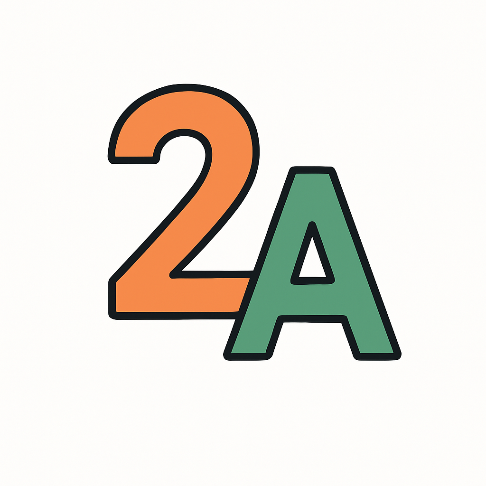
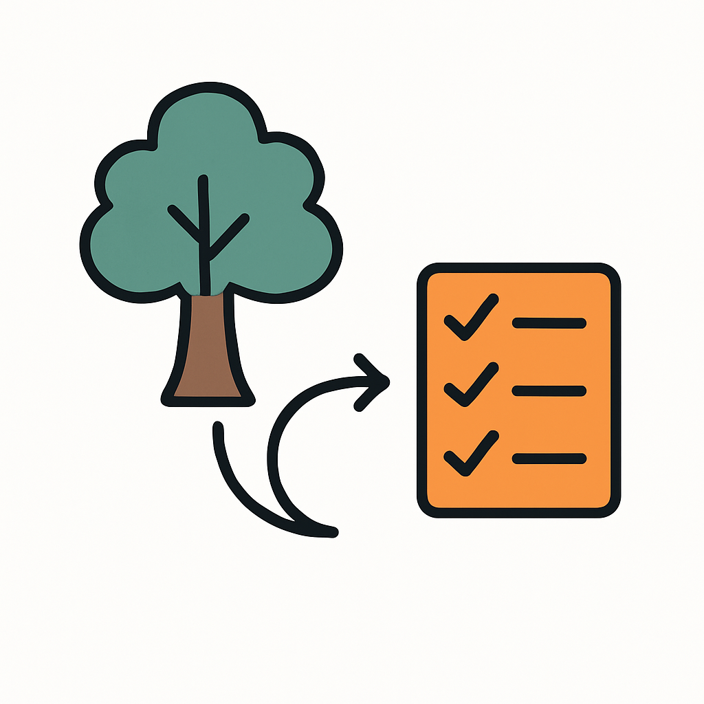
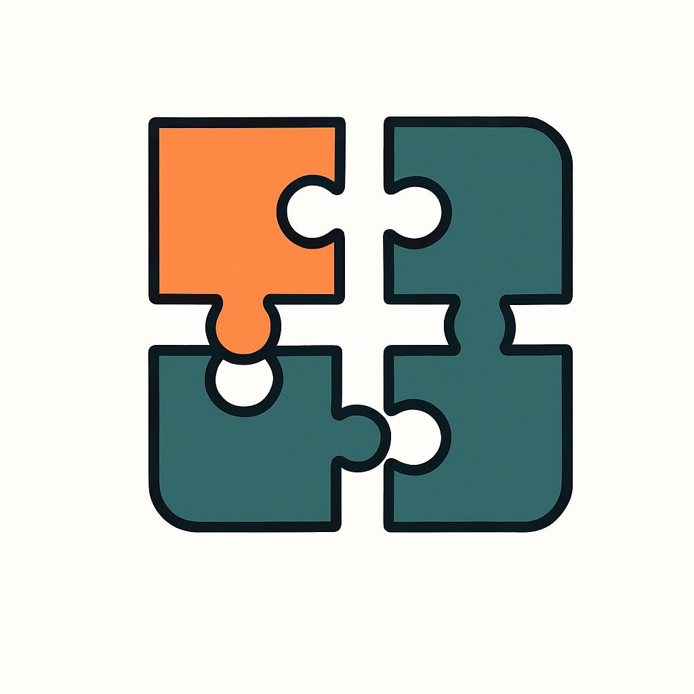

Introducción
En este curso aprenderás a crear programas paso a paso, de forma sencilla y organizada. Usamos un método que te guía para resolver problemas desde cosas simples hasta ideas más complejas.
Contenido del Curso
I. Datos sencillos
Aquí verás cómo trabajar con información básica, como números y palabras. Aprenderás a usar plantillas que te ayudan a organizar tu programa.
II. Datos que crecen
Ahora aprenderás a manejar información que puede cambiar de tamaño, como listas o árboles, usando técnicas sencillas que hacen que el programa sea más flexible.
III. Abstracción
En esta parte descubrirás cómo agrupar ideas similares para que tu programa sea más ordenado y fácil de modificar.
